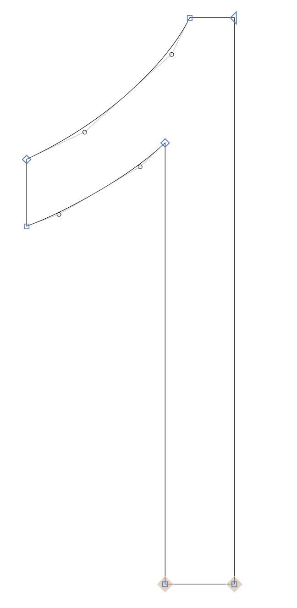

𝔸𝕛𝕠𝕦𝕥𝕖𝕫 du caractère à 𝕧𝕠𝕥𝕣𝕖 site 🚀
C'est quoi une police de caractères ?
Ensemble de glyphes ... de même style, corps et graisse
C'est quoi un glyphe ?
Un petit symbole dessiné qui représente une lettre, une ponctuation ou autre.
Dans le monde numérique...
Fichier regroupants des formes vectorielles
2 principaux formats
TrueType
OpenType
WOFF2 pour le web
- Format compressé 🗜
- Compatible avec TrueType & OpenType
Typeface: Arizona (Dinamo)
Johan Rouve x Comet
@JohanRouve
Structure
- name
- cmap
- glyf
Exemple glyf
Ligature

JetBrains Mono
== != =/= <= >= <>
<== <=> ==>
*** ?= <$> <$ $> @_
|> <| ||> <|| |||> <|||
Ligatures standards
fi, fl, ff, ffi, ffl, fb, ffb, fj, ffj, fk, ffk, ft, fft
actif par défault
.disable-liga {
font-variant-ligatures: none;
}
ligatures spécifiques
inactif par défault
.enable-dlig {
font-variant-ligatures: discretionary-ligatures;
}
Composition
- Homogeneité
- Maintenabilité
Composition à l'extreme
Sixtyfour
a â à e é ë ê
B C D F G H I
La quête de l'esperluette
Johan & Baba
Alternatives stylistyques
Montserrat
a e é f l t w y z
A E É F G I J M N Q T U W Y Z
Alternative stylistique
.enable-salt {
font-feature-settings: "salt";
}
Ensemble stylistique
.enable-salt {
font-feature-settings: "ss02";
}
Couleurs
Bradley Initials DJR
D D D
@font-face {
font-family: 'Bradley Initials DJR';
src: url('./BradleyInitialsDJR-Regular.woff2');
}
@font-palette-values --custom-palette {
font-family: 'Bradley Initials DJR';
base-palette: 1;
override-colors: 0 #FFE424, 1 #FFFFFF;
}
body {
font-family: "Bradley Initials DJR";
font-palette: --custom-palette;
}
Il y a quelque chose de differents
Il y a quelque chose de differents

Arizona (Dinamo)
Variable font for the win !
Serif
Weight
Axe de variation
Muybridge
Animation
🐎